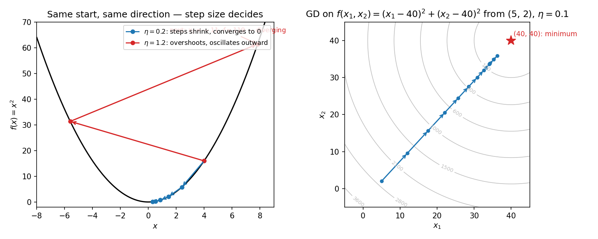

10. Unconstrained optimization and gradient descent
10.1 The problem: minimize, with no strings attached
An optimization problem has an objective \(f\) — a function you want to make as small (or as large) as possible — evaluated at a variable (in ML parlance, a parameter) \(\mathbf{x} \in \mathbb{R}^d\), plus possibly some constraints \(g_j(\mathbf{x}) \le 0\) or \(h_j(\mathbf{x}) = 0\) restricting where \(\mathbf{x}\) may live.
Def. The unconstrained optimization problem = \[\min_{\mathbf{x} \in \mathbb{R}^d} f(\mathbf{x}),\] with no constraints on \(\mathbf{x}\): every point of \(\mathbb{R}^d\) is allowed. Compare: the “cow and grass” setup from the lectures — minimize \((x_1 - 40)^2 + (x_2 - 40)^2\) — is constrained by the rope and the fence. Here, those constraints are dropped: the cow can roam the whole plane.
Note: Maximizing is the same problem in disguise: \(\max f(\mathbf{x}) = -\min(-f(\mathbf{x}))\). Flip the sign and you are back to minimization.
Why ML cares. Training a model is an unconstrained minimization: the variable \(\mathbf{x}\) is the vector of model parameters, the objective \(f\) is the loss on the training data, and the “best classifier” of the lectures is the one with the least loss. This chapter builds the algorithm that does the minimizing. (Chapter 11 adds the constraints back; Chapter 43 scales the algorithm up to neural nets.)
Basically, … You have a hilly landscape \(f\) and you may stand anywhere. Find the lowest point. Machine learning is exactly this: the landscape is the loss, the position is the model’s weights, and “training” is walking downhill until you can’t go lower.
10.2 The school method, and where it breaks
The method from school: write \(f'(x)\), set it to \(0\), solve for \(x\).
eg 1 — the easy case (full steps). Minimize \(f(x) = (x - 5)^2\) over \(x \in \mathbb{R}\).
- \(f'(x) = 2(x - 5)\). Set \(= 0\): \(x = 5\).
- \(f''(x) = 2 > 0\), so (Chapter 8, §8.7.2) this is a local minimum.
- Since \(f(x) \ge 0\) everywhere and \(f(5) = 0\), nothing can beat it: \(x = 5\) is the global minimum, value \(0\).
Basically, … For \((x-5)^2\) you can almost see the answer: squares are never negative, and \(5\) makes it zero. The derivative method agrees: \(x = 5\).
But this method only works when the equation \(f'(x) = 0\) is solvable:
eg 2 — where the school method stalls. Minimize \(f(x) = 3x^6 + 2x^5 + 3x^3 + 5x^2 + 2\).
- \(f'(x) = 18x^5 + 10x^4 + 9x^2 + 10x\).
- Set \(= 0\): a degree-\(5\) equation, \(18x^5 + 10x^4 + 9x^2 + 10x = 0\).
- There is no general formula for degree \(5\) — so the “set derivative to zero and solve” recipe dead-ends. Worse: even if you found roots, you’d still have to decide which (if any) is the minimum.
Note: Computers cannot do the clever logical reasoning of eg 1 (“squares are non-negative, so \(5\) must be the minimum”). They need a mechanical procedure: an algorithm that starts somewhere and improves, step by step. That is what we build next.
10.3 The iterative idea: pick a direction, take a step, repeat
Start with any guess \(x_0 \in \mathbb{R}\) (arbitrary — say \(x_0 = 10\)) and improve it: \[x_{t+1} = x_t + d,\] where \(d\) is a direction: a signed step added to the current point. In one dimension there are only two directions — left (\(d < 0\)) or right (\(d > 0\)).
For \(f(x) = (x - 5)^2\): if \(x > 5\), the minimum lies to the left, so \(d\) must be negative; if \(x < 5\), \(d\) must be positive. Two conclusions:
- The good direction depends on where you are: \(d\) must be a function of \(x\), not a constant.
- The derivative carries the needed sign information: \(f'(x) = 2(x - 5)\) is positive when \(x > 5\) and negative when \(x < 5\) — exactly the opposite of the direction we want. So choose \[d = -f'(x).\] Then \(d < 0\) when \(x > 5\) and \(d > 0\) when \(x < 5\): always the correct side.
eg 3 — the first iteration (full steps). \(f(x) = (x-5)^2\), \(x_0 = 10\).
- \(f'(10) = 2(10 - 5) = 10\). Direction \(d = -10\) (left — correct, the minimum is at \(5\)).
- \(x_1 = x_0 + d = 10 - 10 = 0\). We moved — but did we move well?
Basically, … You are somewhere on a hill and want to go down. The direction \(d\) must change depending on where you stand — and the negative of the slope, \(-f'(x)\), always points the right way: downhill. This is the seed of the whole chapter.
10.4 The step-size problem: too big oscillates, too small stalls
Continue eg 3 with the rule \(x_{t+1} = x_t - f'(x_t)\) (this is \(d = -f'(x)\) with step size \(1\)):
- \(x_0 = 10 \to x_1 = 10 - 10 = 0\).
- \(f'(0) = 2(0 - 5) = -10\), so \(x_2 = 0 - (-10) = 10\).
- \(x_3 = 0\), \(x_4 = 10\), … — we bounce between \(10\) and \(0\) forever and never reach \(5\).
Note: The direction was right every time (left from \(10\), right from \(0\)). The failure is the amount moved: each step overshoots the minimum and lands on the mirror image of where it started.
The fix: scale the direction by a step size \(\eta_t > 0\) that may differ each round: \[x_{t+1} = x_t - \eta_t f'(x_t).\] If \(\eta_t = 1\) always, we recover the oscillating rule. The question is how to choose the sequence \(\eta_0, \eta_1, \dots\).
Attempt 1: halve every time. \(\eta_t = \frac{1}{2^t}\): \(1, \frac{1}{2}, \frac{1}{4}, \frac{1}{8}, \dots\). Seems safe — steps shrink, no oscillation. But:
eg 4 — shrinking too fast (full steps). Suppose some function always returns direction \(d = 1\) (always “move right”), and the minimum is at \(x^* = 5\) while we start at \(x_0 = 2\).
- With \(\eta_t = \frac{1}{2^t}\): \(x_1 = 2 + 1 = 3\), \(x_2 = 3 + \frac{1}{2} = 3.5\), \(x_3 = 3.5 + \frac{1}{4} = 3.75\), …
- Total distance ever travelled: \(1 + \frac{1}{2} + \frac{1}{4} + \cdots = \frac{1}{1 - 1/2} = 2\) (geometric series).
- So the iterates approach \(2 + 2 = 4\) — and stop there, forever short of \(x^* = 5\). The direction was right all along; the steps became too small too fast.
Attempt 2: shrink, but slower. \(\eta_t = \frac{1}{t+1}\): \(1, \frac{1}{2}, \frac{1}{3}, \frac{1}{4}, \dots\). Steps still shrink (no oscillation), but now the total budget \(\sum_{t=0}^{\infty} \frac{1}{t+1} = 1 + \frac{1}{2} + \frac{1}{3} + \cdots = \infty\) (the harmonic series diverges). No matter how far \(x^*\) is, the cumulative step budget is infinite — you can always get there.
Basically, … Step size has two enemies pulling opposite ways. Too big: you bounce back and forth across the valley forever (the \(10 \to 0 \to 10\) dance). Too small: you run out of gas halfway there (stuck at \(4\), minimum at \(5\)). The winning recipe: steps that shrink — so you stop bouncing — but whose total never runs out — so you always have enough road left to reach the minimum.
10.5 The gradient descent algorithm (one dimension)
Collecting the ideas: initialize anywhere, then iterate \[\boxed{x_{t+1} = x_t - \eta_t f'(x_t)}, \qquad \text{e.g. } \eta_t = \frac{1}{t+1}.\] All it needs is the ability to compute the derivative at a point — something a computer does mechanically. It is a first-order method: it uses only first-derivative information, never \(f''\).
Def. This procedure is gradient descent. (“Gradient” is the higher-dimensional name for the derivative — §10.7. The name is explained there; the algorithm is already here.)
eg 5 — step size \(1\) diverges (full steps). \(f(x) = (3x - 9)^2\), \(x_0 = 2\), constant \(\eta = 1\).
- \(f'(x) = 2(3x - 9)\cdot 3 = 18x - 54\). (Check: minimum where \(18x - 54 = 0\), i.e. \(x = 3\), \(f(3) = 0\).)
- \(x_1 = 2 - 1\cdot(18\cdot 2 - 54) = 2 - (-18) = 20\). Overshot: we leapt from \(2\) past \(3\) all the way to \(20\).
- \(x_2 = 20 - (18\cdot 20 - 54) = 20 - 306 = -286\). Worse. \(f\) explodes: \(9 \to 2601 \to 751689 \approx 7.5\times 10^5\).
eg 6 — a small step size converges (full steps). Same \(f\), same \(x_0 = 2\), but \(\eta = 0.05\).
- \(x_1 = 2 - 0.05(18\cdot 2 - 54) = 2 - 0.05(-18) = 2.9\).
- \(x_2 = 2.9 - 0.05(18\cdot 2.9 - 54) = 2.9 - 0.05(-1.8) = 2.99\).
- \(x_3 = 2.99 - 0.05(18\cdot 2.99 - 54) = 2.99 - 0.05(-0.18) = 2.999\).
- \(f\): \(9 \to 0.09 \to 0.0009 \to 0.000009\) — homing in on \(3\).
Note: Same function, same start, same direction — only \(\eta\) changed, and the outcome flipped from blow-up to convergence. Step size is not a detail; it is half the algorithm. (This is why \(\eta\), the learning rate, becomes a hyperparameter to tune in Chapter 39.)
eg 7 — converging to a local minimum (full steps). \(f(x) = x^3 - x^2 - x + 5\), \(x_0 = 0.75\), \(\eta = 0.25\).
- \(f'(x) = 3x^2 - 2x - 1\). Critical points: \(3x^2 - 2x - 1 = (3x + 1)(x - 1) = 0\), so \(x = 1\) and \(x = -\frac{1}{3}\). With \(f''(x) = 6x - 2\): \(f''(1) = 4 > 0\) (local min), \(f''(-\frac{1}{3}) = -4 < 0\) (local max).
- \(f'(0.75) = 3(0.5625) - 1.5 - 1 = -0.8125\). \(x_1 = 0.75 - 0.25(-0.8125) = 0.953125 \approx 0.953\).
- \(f'(0.953125) = 3(0.9084473) - 2(0.953125) - 1 \approx -0.1809\). \(x_2 = 0.953125 - 0.25(-0.1809) \approx 0.998\).
- The iterates crawl toward \(x = 1\) — the local minimum nearest the start. The local maximum at \(-\frac{1}{3}\) is never visited. Direction right, step size fine, destination local.
Basically, … Gradient descent is a blindfolded hiker who can only feel the slope under their feet: step downhill a little, feel again, repeat. The step size is the stride length — too long and you leap over the valley and bounce; too short and you fall asleep halfway. With a sensible stride, you reach the bottom of your valley.
10.6 Why the negative derivative: the Taylor argument
We pulled \(d = -f'(x)\) out of a hat in §10.3 (it happened to work for \((x-5)^2\)). Here is the real justification, from the Taylor series of Chapter 8.
Setup. We are at \(x\) and consider stepping to \(x + \eta d\): direction \(d\), step size \(\eta > 0\) (small). First-order Taylor (§8.6, and the lectures’ key expansion): \[f(x + \eta d) \approx f(x) + \eta\, d\, f'(x),\] dropping the \(\eta^2, \eta^3, \dots\) higher-order terms, which are negligible when \(\eta\) is small. The change in \(f\) is therefore \[f(x + \eta d) - f(x) \approx \eta\, d\, f'(x).\]
The requirement. We minimize, so we want the new value smaller: \(f(x + \eta d) - f(x) < 0\), i.e. \[\eta\, d\, f'(x) < 0.\] Since \(\eta > 0\) cannot change the sign, this is equivalent to \[d \cdot f'(x) < 0:\] the direction must point against the derivative.
The choice. Take \(d = -f'(x)\). Then \[d \cdot f'(x) = -f'(x)\cdot f'(x) = -\,f'(x)^2 \le 0,\] strictly negative unless \(f'(x) = 0\) (in which case the algorithm stops — §10.9). So for small \(\eta\), the Taylor approximation guarantees the step decreases \(f\).
Gradient descent as iterated linear approximation. Chapter 9, §9.6 promised this, and here is the delivery. At \(x_t\), the linear approximation is \[L_{x_t}(x) = f(x_t) + f'(x_t)\,(x - x_t).\] Write the next point as \(x = x_t + \eta u\) with \(|u| = 1\) (a fixed-size step in a unit direction \(u\)): \[L_{x_t}(x_t + \eta u) = f(x_t) + \eta\, f'(x_t)\, u.\] Minimizing the linearization over the unit direction \(u\): the term \(f'(x_t)\,u\) is smallest when \(u\) points opposite to \(f'(x_t)\), i.e. \(u = -f'(x_t)/|f'(x_t)|\) (the one-dimensional Cauchy–Schwarz argument of §9.4). So the linear model’s minimizer is a step in the direction \(-f'(x_t)\) — and absorbing \(|f'(x_t)|\) into the step size gives the update \[x_{t+1} = x_t - \eta\, f'(x_t).\] That is: gradient descent = minimize the linear approximation at the current point, step there, re-approximate, repeat. The honest limitation of §8.6/§9.6 carries over: the linearization is only trustworthy near \(x_t\) — which is exactly why \(\eta\) must be small.
Basically, … Zoom in on the curve at your current point: it looks like a straight line with slope \(f'(x)\). Walk downhill along that line a little. You will land slightly lower (the line is accurate up close). Now zoom in at the new point and do it again. That loop is gradient descent.
10.7 The multivariate version: replace the derivative by the gradient
For \(f: \mathbb{R}^d \to \mathbb{R}\), the derivative generalizes to the gradient \(\nabla f\) (Chapter 9, §9.2) — the vector of partial derivatives. Everything carries over with \(f'\) swapped for \(\nabla f\):
\[\boxed{\mathbf{x}_{t+1} = \mathbf{x}_t - \eta_t\, \nabla f(\mathbf{x}_t)},\] a vector minus a scalar times a vector. This is why the algorithm is called gradient descent — in one dimension we were secretly doing it all along.
The Taylor justification upgrades too (§9.8’s first-order term): \[f(\mathbf{x} + \eta \mathbf{d}) \approx f(\mathbf{x}) + \eta\, \mathbf{d}^T \nabla f(\mathbf{x}),\] so the decrease condition becomes \(\mathbf{d}^T \nabla f(\mathbf{x}) < 0\). Choosing \(\mathbf{d} = -\nabla f(\mathbf{x})\) gives \[\mathbf{d}^T \nabla f(\mathbf{x}) = -\nabla f(\mathbf{x})^T \nabla f(\mathbf{x}) = -\lVert \nabla f(\mathbf{x}) \rVert^2 \le 0,\] strict unless the gradient is \(\mathbf{0}\).
Descent directions and the steepest one. Any \(\mathbf{d}\) with \(\mathbf{d}^T \nabla f(\mathbf{x}) < 0\) is a descent direction — a small step along it is guaranteed (by the linear approximation) to reduce \(f\). There are infinitely many: at a point in \(\mathbb{R}^2\), they fill the entire half-plane on the far side of the line perpendicular to \(\nabla f\) (§9.4’s picture: the gradient partitions space into “uphill” and “downhill” halves). Among unit directions, the one minimizing the linearization is \(-\nabla f(\mathbf{x})/\lVert\nabla f(\mathbf{x})\rVert\) — the steepest descent direction (§9.4, Cauchy–Schwarz). So gradient descent is also called the steepest descent algorithm: at every step it picks the locally fastest way down.
eg 8 — three kinds of directions (full steps). \(f(x_1, x_2) = x_1^2 + x_2^2\) at \((3, 1)\); \(\nabla f(3, 1) = (6, 2)^T\).
- \(\mathbf{d} = (-6, -2)\): \(\mathbf{d}^T\nabla f = -36 - 4 = -40 < 0\) → descent (this is \(-\nabla f\), steepest descent).
- \(\mathbf{d} = (1, 1)\): \(\mathbf{d}^T\nabla f = 6 + 2 = 8 > 0\) → ascent, \(f\) increases.
- \(\mathbf{d} = (-2, 6)\): \(\mathbf{d}^T\nabla f = -12 + 12 = 0\) → perpendicular to the gradient: locally flat, neither up nor down.
eg 9 — two-dimensional iterations (full steps). Minimize the “cow” distance \(d(x_1, x_2) = (x_1 - 40)^2 + (x_2 - 40)^2\) from \(\mathbf{x}_0 = (5, 2)\), with constant \(\eta = 0.1\).
- \(\nabla d(\mathbf{x}) = (2(x_1 - 40),\, 2(x_2 - 40))^T\). At \((5, 2)\): \((-70, -76)^T\).
- \(\mathbf{x}_1 = (5, 2) - 0.1(-70, -76) = (12,\, 9.6)\). Both coordinates moved up — toward \(40\). (The negative gradient \((70, 76)\) points straight at the grass.)
- \(\nabla d(12, 9.6) = (-56, -60.8)^T\). \(\mathbf{x}_2 = (12, 9.6) + 0.1(56, 60.8) = (17.6,\, 15.68)\).
- \(\nabla d(17.6, 15.68) = (-44.8, -48.64)^T\). \(\mathbf{x}_3 = (17.6, 15.68) + 0.1(44.8, 48.64) = (22.08,\, 20.544)\).
- Check the values: \(d(5,2) = 35^2 + 38^2 = 2669\); \(d(12,9.6) = 28^2 + 30.4^2 = 1708.16\); \(d(17.6,15.68) \approx 1093.22\) — monotone decrease, as promised. Each coordinate’s error \((x_i - 40)\) shrinks by the factor \((1 - 2\eta) = 0.8\) per step: \(-35 \to -28 \to -22.4 \to -17.92\).
The picture (right panel): every iterate cuts straight across the contours toward \((40, 40)\).

Basically, … In many dimensions the slope becomes an arrow — the gradient — pointing the steepest way up. Flip it and walk a little: you descend as fast as locally possible. Recompute the arrow at the new spot (it will have turned a bit), flip, walk again. The contour picture shows the path: always crossing the “same height” lines at right angles, heading for the bottom of the bowl.
10.8 Optimality conditions: the gradient finds suspects, the Hessian interrogates them
First-order necessary condition (Chapter 9, §9.9). If \(f\) is minimized (or maximized) at \(\mathbf{v}\), then \[\nabla f(\mathbf{v}) = \mathbf{0}.\] A point with \(\nabla f(\mathbf{v}) = \mathbf{0}\) is a critical point. Necessary, not sufficient: maxima and saddles also have vanishing gradient.
Second-order conditions. At a critical point \(\mathbf{v}\), the linear term of the Taylor expansion vanishes, so what remains is the quadratic term (§9.8): \[f(\mathbf{v} + \mathbf{u}) \approx f(\mathbf{v}) + \tfrac{1}{2}\, \mathbf{u}^T \mathbf{H}(\mathbf{v})\, \mathbf{u},\] where \(\mathbf{H}(\mathbf{v})\) is the Hessian matrix of second partials at \(\mathbf{v}\). The sign of the quadratic form \(\mathbf{u}^T \mathbf{H}(\mathbf{v})\, \mathbf{u}\) decides the verdict — this is Chapter 7’s bowl machinery (§7.9–§7.10), now applied at \(\mathbf{v}\):
- \(\mathbf{H}(\mathbf{v})\) positive definite → the quadratic term is \(> 0\) in every direction → bowl → local minimum.
- \(\mathbf{H}(\mathbf{v})\) negative definite (\(-\mathbf{H}(\mathbf{v})\) positive definite) → quadratic term \(< 0\) in every direction → upside-down bowl → local maximum.
- \(\mathbf{H}(\mathbf{v})\) indefinite (positive in some directions, negative in others) → up some ways, down others → saddle point.
- \(\mathbf{H}(\mathbf{v})\) merely semi-definite → inconclusive (flat in some direction; higher-order terms decide — the multivariable twin of \(f''(c) = 0\) in §8.7.2).
For \(2 \times 2\), the eigenvalue test of §7.9 becomes the quick check: with \(\mathbf{H} = \begin{pmatrix} a & b \\ b & c \end{pmatrix}\) — positive definite iff \(a > 0\) and \(\det \mathbf{H} = ac - b^2 > 0\); negative definite iff \(a < 0\) and \(\det \mathbf{H} > 0\); indefinite iff \(\det \mathbf{H} < 0\).
eg 10 — classifying all critical points of a 2-variable function (full steps). \(f(x, y) = x^3 - 3x + y^3 - 3y\).
- First-order: \(\frac{\partial f}{\partial x} = 3x^2 - 3\), \(\frac{\partial f}{\partial y} = 3y^2 - 3\). Set both to \(0\): \(x = \pm 1\), \(y = \pm 1\). Four critical points: \((1, 1)\), \((-1, -1)\), \((1, -1)\), \((-1, 1)\).
- Hessian: \(\frac{\partial^2 f}{\partial x^2} = 6x\), \(\frac{\partial^2 f}{\partial x \partial y} = 0\), \(\frac{\partial^2 f}{\partial y^2} = 6y\). So \(\mathbf{H}(x, y) = \begin{pmatrix} 6x & 0 \\ 0 & 6y \end{pmatrix}\) (symmetric ✓).
- At \((1, 1)\): \(\mathbf{H} = \begin{pmatrix} 6 & 0 \\ 0 & 6 \end{pmatrix}\), \(a = 6 > 0\), \(\det = 36 > 0\) → positive definite → local minimum, \(f(1, 1) = 1 - 3 + 1 - 3 = -4\).
- At \((-1, -1)\): \(\mathbf{H} = \begin{pmatrix} -6 & 0 \\ 0 & -6 \end{pmatrix}\), \(a = -6 < 0\), \(\det = 36 > 0\) → negative definite → local maximum, \(f(-1, -1) = -1 + 3 - 1 + 3 = 4\).
- At \((1, -1)\): \(\mathbf{H} = \begin{pmatrix} 6 & 0 \\ 0 & -6 \end{pmatrix}\), \(\det = -36 < 0\) → indefinite → saddle, \(f(1, -1) = 1 - 3 - 1 + 3 = 0\).
- At \((-1, 1)\): \(\mathbf{H} = \begin{pmatrix} -6 & 0 \\ 0 & 6 \end{pmatrix}\), \(\det = -36 < 0\) → indefinite → saddle, \(f(-1, 1) = -1 + 3 + 1 - 3 = 0\).
Basically, … The gradient going quiet only means “flat here” — it can’t tell a valley floor from a peak or a mountain pass. The Hessian is the follow-up detective: it measures the curvature in every direction. Curved up everywhere = valley (minimum); curved down everywhere = peak (maximum); up some ways, down others = pass (saddle).
10.9 What gradient descent promises — and what it does not
What it promises. With a sensible step-size schedule (e.g. \(\eta_t = \frac{1}{t+1}\)), the oscillations of §10.4 disappear: one can show the iterates converge, and the Taylor argument of §10.6 gives monotone decrease \(f(\mathbf{x}_{t+1}) < f(\mathbf{x}_t)\) for small \(\eta_t\) (the descent in gradient descent). The algorithm needs only differentiability and a gradient oracle.
Why it stops at local minima. Look at the update: \(\mathbf{x}_{t+1} = \mathbf{x}_t - \eta_t \nabla f(\mathbf{x}_t)\). If \(\nabla f(\mathbf{x}_t) = \mathbf{0}\), then \(\mathbf{x}_{t+1} = \mathbf{x}_t\) — the algorithm cannot move. It halts at the first critical point it slides into, which (eg 7) is typically a local minimum:
Def. \(\hat{\mathbf{x}}\) is a local minimum = there exists \(\varepsilon > 0\) such that \(f(\hat{\mathbf{x}}) \le f(\mathbf{x})\) for all \(\mathbf{x}\) with \(\lVert\mathbf{x} - \hat{\mathbf{x}}\rVert < \varepsilon\) (lowest in some neighbourhood). The global minimum \(\mathbf{x}^*\) satisfies \(f(\mathbf{x}^*) \le f(\mathbf{x})\) for all \(\mathbf{x}\).
The honest scope.
- Gradient descent finds stationary points (critical points), not guaranteed global minima. A wiggly \(f\) has many valleys; starting in one valley, you descend to its bottom and stop — the deeper valley next door stays invisible.
- It can even converge to a saddle point (tutorial caveat): at a saddle the gradient is also \(\mathbf{0}\), so the update also freezes there.
- With a bad \(\eta\) it may not converge at all — oscillation (eg 5) or, for some functions and starts, an infinite cycle.
- No general-purpose algorithm can guarantee the global minimum of an arbitrary function — gradient descent settling for local minima is the best one can hope for without extra assumptions on \(f\).
The good news for ML. For the functions ML actually minimizes, local is often good enough: there is a large, important class — the convex functions of Chapter 12 — for which every local minimum is automatically a global minimum (the \((x-5)^2\) of §10.2 is the baby example: one valley, so the local minimum is the global one). That is why gradient descent, despite its modest guarantees, powers machine learning.
A second-order alternative (one paragraph). Newton’s method uses curvature too: \(x_{t+1} = x_t - f'(x_t)/f''(x_t)\) (in \(d\) dimensions it needs the inverse Hessian). On \(f(x) = (3x-9)^2\) from \(x_0 = 2\) it lands on \(x = 3\) in a single iteration — because \(f\) is quadratic, its second-order Taylor model is exact (§9.8’s note). The price, per the tutorial: it needs second derivatives (expensive, and a Hessian inverse per step in higher dimensions), it fails when the Hessian is not invertible, it can cycle or land on a saddle, and each iteration costs far more. Gradient descent stays first-order — cheaper per step, slower to arrive.
Basically, … Gradient descent is a ball rolling downhill that stops at the bottom of whichever valley it started in — it can’t teleport to a deeper valley, and on a mountain pass it can get stuck too. For most ML losses, any valley bottom is fine (and for convex losses there is only one valley). Newton’s method is the same ball with a curvature sensor: faster, but heavier, and it can misfire.
Note: “Converges to a local minimum” also quietly assumes the gradient exists everywhere the iterates go — non-differentiable points (kinks like \(|x|\)) need their own machinery, outside this chapter.
10.10 This is training — and where this goes next
Unconstrained gradient descent is not a warm-up exercise: it is the training loop. Every time a model is “trained” in this book, some version of \[\boldsymbol{\theta}_{t+1} = \boldsymbol{\theta}_t - \eta_t\, \nabla L(\boldsymbol{\theta}_t)\] runs — parameters \(\boldsymbol{\theta}\), loss \(L\), learning rate \(\eta_t\). The loss landscape is the hill; the weights are the hiker.
Where this goes next
- Chapter 11 (constrained optimization): the cow’s rope and fence return. When \(-\nabla f\) points outside the allowed region, pure gradient descent breaks — Lagrange multipliers and projected gradient descent fix it.
- Chapter 12 (convexity): the functions for which “local minimum = global minimum”, where gradient descent’s modest guarantee becomes the full prize.
- Chapter 39 (hyperparameter tuning): \(\eta\) — the learning rate — is the hyperparameter you will tune most. §10.4–10.5 showed why: it decides between convergence and chaos.
- Chapter 43 (optimization for neural nets): the industrial version — stochastic gradients, momentum, adaptive step sizes (Adam and friends) — gradient descent scaled to millions of parameters.
The through-line: Chapter 9 turned the gradient into a compass; this chapter turned the compass into an algorithm — step a little along \(-\nabla f\), re-approximate, repeat — and the Hessian into the judge that classifies where you land.
Problem set
- Minimize \(f(x) = x^2 - 6x + 5\) by the school method: compute \(f'\), solve \(f'(x) = 0\), classify with \(f''\), and argue the critical point is the global minimum.
- Run two gradient-descent iterations on \(f(x) = x^2\) from \(x_0 = 4\) with constant \(\eta = 0.1\). Verify \(f\) decreases at each step.
- For \(f(x) = (x - 5)^2\) from \(x_0 = 10\): (a) with constant \(\eta = 1\), compute \(x_1, x_2, x_3\) and describe the behaviour; (b) with the schedule \(\eta_t = \frac{1}{t+1}\) (\(t = 0, 1\)), compute \(x_1, x_2\) and describe the behaviour.
- Let \(S_n = 1 + \frac{1}{2} + \cdots + \frac{1}{2^{n-1}}\) and \(H_n = 1 + \frac{1}{2} + \cdots + \frac{1}{n}\). Show \(S_n < 2\) for every \(n\) (the \(\frac{1}{2^t}\) budget is finite), while \(H_n \to \infty\) (hint: \(\frac{1}{3} + \frac{1}{4} > \frac{1}{2}\), \(\frac{1}{5} + \cdots + \frac{1}{8} > \frac{1}{2}\), …). What does this say about the two step-size schedules of §10.4?
- For \(f(x_1, x_2) = x_1^2 + 4x_2^2\): (a) write down \(\nabla f\); (b) run two GD iterations from \((2, 3)\) with \(\eta = 0.2\); (c) check that \(f\) decreased at each step.
- For \(f(x, y) = x^2 + y^2\) at the point \((2, -1)\): which of \(\mathbf{d}_1 = (1, 1)\), \(\mathbf{d}_2 = (-2, 1)\), \(\mathbf{d}_3 = (1, 2)\) are descent directions? Interpret each dot product geometrically.
- Find all critical points and classify each (local min / local max / saddle) using the Hessian: (a) \(f(x, y) = x^2 + y^2 - 2x - 4y + 5\); (b) \(f(x, y) = -x^2 - y^2 + 4x\); (c) \(f(x, y) = x^2 - y^2\).
- Starting from the first-order Taylor approximation \(f(x + \eta d) \approx f(x) + \eta\, d\, f'(x)\), derive the sign condition that \(d\) must satisfy for the step to decrease \(f\). Then verify that \(d = -f'(x)\) satisfies it strictly whenever \(f'(x) \ne 0\).
- For \(f(x) = (x - a)^2\) with a constant step size \(\eta\): (a) show \(x_{t+1} - a = (1 - 2\eta)(x_t - a)\); (b) deduce the exact range of \(\eta\) for which the iterates converge to \(a\), and explain what goes wrong outside it.
- Take one Newton step \(x_1 = x_0 - f'(x_0)/f''(x_0)\) on \(f(x) = (3x - 9)^2\) from \(x_0 = 2\). Where do you land? Explain why it is exact in one step (hint: §9.8’s note on quadratics).
- Suppose gradient descent has “converged”, i.e. \(\mathbf{x}_{t+1} = \mathbf{x}_t\) to machine precision. (a) What does the update rule imply about \(\nabla f(\mathbf{x}_t)\)? (b) Why does this mean GD finds stationary points rather than guaranteed minima — and why might such a point be a saddle?
Solutions
Attempt each problem first, then click a problem to reveal its worked solution.
- \(f'(x) = 2x - 6\). Set \(= 0\): \(2x = 6\), so \(x = 3\) — the only critical point (\(f\) is a polynomial, differentiable everywhere).
- \(f''(x) = 2 > 0\): local minimum at \(x = 3\) (§8.7.2).
- Complete the square: \(f(x) = x^2 - 6x + 9 - 4 = (x - 3)^2 - 4 \ge -4 = f(3)\) for all \(x\). So \(x = 3\) is the global minimum, value \(-4\).
- \(x_1 = x_0 - \eta f'(x_0) = 4 - 0.1 \cdot 8 = 4 - 0.8 = 3.2\).
- \(f'(3.2) = 6.4\). \(x_2 = 3.2 - 0.1 \cdot 6.4 = 3.2 - 0.64 = 2.56\).
- Values: \(f(4) = 16\), \(f(3.2) = 10.24\), \(f(2.56) = 6.5536\). \(16 > 10.24 > 6.5536\): decreasing at each step, homing in on \(0\).
- Constant \(\eta = 1\):
- \(x_1 = 10 - 1 \cdot 2(10 - 5) = 10 - 10 = 0\).
- \(x_2 = 0 - 1 \cdot 2(0 - 5) = 0 + 10 = 10\).
- \(x_3 = 10 - 10 = 0\). Behaviour: pure oscillation \(10 \to 0 \to 10 \to 0 \to \cdots\) — the step always overshoots the minimum at \(5\) by the same amount, landing on the mirror image. It never converges.
- Schedule \(\eta_t = \frac{1}{t+1}\):
- \(t = 0\): \(\eta_0 = 1\). \(x_1 = 10 - 1 \cdot 10 = 0\).
- \(t = 1\): \(\eta_1 = \frac{1}{2}\). \(f'(x_1) = 2(0 - 5) = -10\). \(x_2 = 0 - \frac{1}{2}(-10) = 5\). Behaviour: \(x_2 = 5\) — the exact minimum, reached in two steps. Shrinking the step size killed the oscillation.
\[S_n = \frac{1 - (1/2)^n}{1 - 1/2} = 2\bigl(1 - 2^{-n}\bigr) < 2 \quad \text{for every } n,\] and \(S_n \to 2\). So a step-size schedule \(\eta_t = \frac{1}{2^t}\) has a finite total budget: starting anywhere, you can travel at most \(2\) units — possibly stranding you short of the minimum (§10.4, eg 4).
\(H_n = 1 + \frac{1}{2} + \cdots + \frac{1}{n}\): group the terms after the first two: \[\underbrace{\tfrac{1}{3} + \tfrac{1}{4}}_{> 2\cdot \tfrac14 = \tfrac12} + \underbrace{\tfrac{1}{5} + \cdots + \tfrac{1}{8}}_{> 4\cdot \tfrac18 = \tfrac12} + \underbrace{\tfrac{1}{9} + \cdots + \tfrac{1}{16}}_{> 8\cdot \tfrac1{16} = \tfrac12} + \cdots\] Each block exceeds \(\frac{1}{2}\), and there are infinitely many blocks, so \(H_n \to \infty\). The schedule \(\eta_t = \frac{1}{t+1}\) still shrinks (no oscillation) but its total budget is infinite — you can reach a minimum no matter how far away it is. This is the two-enemies compromise of §10.4.
\(\nabla f = \begin{pmatrix} 2x_1 \\ 8x_2 \end{pmatrix}\).
From \((2, 3)\), \(\eta = 0.2\):
- \(\nabla f(2, 3) = (4, 24)^T\). \(\mathbf{x}_1 = (2, 3) - 0.2(4, 24) = (2 - 0.8,\ 3 - 4.8) = (1.2,\ -1.8)\).
- \(\nabla f(1.2, -1.8) = (2.4, -14.4)^T\). \(\mathbf{x}_2 = (1.2, -1.8) - 0.2(2.4, -14.4) = (1.2 - 0.48,\ -1.8 + 2.88) = (0.72,\ 1.08)\).
- \(f(2, 3) = 4 + 4\cdot 9 = 40\). \(f(1.2, -1.8) = 1.44 + 4\cdot 3.24 = 1.44 + 12.96 = 14.4\). \(f(0.72, 1.08) = 0.5184 + 4\cdot 1.1664 = 0.5184 + 4.6656 = 5.184\). \(40 > 14.4 > 5.184\): decreased both times. (The true minimum is \((0, 0)\) with value \(0\).)
- \(\mathbf{d}_1^T \nabla f = (1, 1)\cdot(4, -2) = 4 - 2 = 2 > 0\): not a descent direction — it points partly uphill (angle \(< 90^\circ\) with the gradient).
- \(\mathbf{d}_2^T \nabla f = (-2, 1)\cdot(4, -2) = -8 - 2 = -10 < 0\): descent direction — it makes an obtuse angle with the gradient, pointing into the downhill half-plane.
- \(\mathbf{d}_3^T \nabla f = (1, 2)\cdot(4, -2) = 4 - 4 = 0\): neither — perpendicular to the gradient, so a small step is locally flat (it runs along the contour, §9.5).
- \(\nabla f = (2x - 2,\ 2y - 4)^T = \mathbf{0}\) gives \((x, y) = (1, 2)\) — the only critical point.
- Hessian: \(\mathbf{H} = \begin{pmatrix} 2 & 0 \\ 0 & 2 \end{pmatrix}\), constant.
- \(a = 2 > 0\), \(\det = 4 > 0\) → positive definite → local minimum. \(f(1, 2) = 1 + 4 - 2 - 8 + 5 = 0\). (Completing the square: \(f = (x-1)^2 + (y-2)^2 \ge 0\) — it is in fact the global minimum.)
(b) \(f(x, y) = -x^2 - y^2 + 4x\).
- \(\nabla f = (-2x + 4,\ -2y)^T = \mathbf{0}\) gives \((x, y) = (2, 0)\).
- \(\mathbf{H} = \begin{pmatrix} -2 & 0 \\ 0 & -2 \end{pmatrix}\).
- \(a = -2 < 0\), \(\det = 4 > 0\) → negative definite → local maximum. \(f(2, 0) = -4 - 0 + 8 = 4\). (Indeed \(f = 4 - (x-2)^2 - y^2 \le 4\): the global maximum.)
(c) \(f(x, y) = x^2 - y^2\).
- \(\nabla f = (2x, -2y)^T = \mathbf{0}\) gives \((0, 0)\).
- \(\mathbf{H} = \begin{pmatrix} 2 & 0 \\ 0 & -2 \end{pmatrix}\).
- \(\det = -4 < 0\) → indefinite → saddle point. Check: along the \(x\)-axis \(f = x^2 \ge 0\) (uphill), along the \(y\)-axis \(f = -y^2 \le 0\) (downhill) — up some ways, down others.
From the Taylor approximation, \[f(x + \eta d) - f(x) \approx \eta\, d\, f'(x),\] so the requirement becomes \(\eta\, d\, f'(x) < 0\). Since \(\eta > 0\) is positive, it cannot flip the sign, so equivalently: \[d \cdot f'(x) < 0\] (the direction must oppose the derivative — §10.6).
Check \(d = -f'(x)\): \(d \cdot f'(x) = \bigl(-f'(x)\bigr)\cdot f'(x) = -\,f'(x)^2\). If \(f'(x) \ne 0\), then \(f'(x)^2 > 0\) and \(-f'(x)^2 < 0\) strictly. So the condition holds strictly: for small enough \(\eta\), the step \(x \to x + \eta d\) is guaranteed to decrease \(f\). If \(f'(x) = 0\), then \(d = \mathbf{0}\) and the algorithm does not move (§10.9).
\(x_{t+1} = x_t - \eta \cdot 2(x_t - a)\). Subtract \(a\) from both sides: \[x_{t+1} - a = x_t - a - 2\eta(x_t - a) = (1 - 2\eta)(x_t - a).\] The error \(e_t = x_t - a\) evolves as \(e_{t+1} = (1 - 2\eta)\, e_t\), so \(e_t = (1 - 2\eta)^t e_0\).
\(|e_t| \to 0\) iff \(|1 - 2\eta| < 1\), i.e. \(-1 < 1 - 2\eta < 1\), i.e. \(0 < \eta < 1\).
- If \(\eta = 1\): \(1 - 2\eta = -1\), so \(e_t = (-1)^t e_0\) — pure oscillation, the §10.4 example (\(10 \to 0 \to 10\)).
- If \(\eta > 1\): \(|1 - 2\eta| > 1\) — the error grows geometrically: divergence (eg 5’s blow-up).
- If \(\eta \le 0\): the “step” moves uphill or nowhere.
Inside \((0, 1)\) the error shrinks by a constant factor each step — linear (geometric) convergence to \(a\).
\[x_1 = x_0 - \frac{f'(x_0)}{f''(x_0)} = 2 - \frac{18\cdot 2 - 54}{18} = 2 - \frac{-18}{18} = 2 + 1 = 3.\]
One step lands exactly on \(x = 3\), the minimizer (\(f(3) = 0\)). Why: Newton’s step minimizes the second-order Taylor model \(f(x_t) + f'(x_t)(x - x_t) + \frac{1}{2}f''(x_t)(x - x_t)^2\), and since \(f\) is itself quadratic, that model is exact (§9.8’s note) — minimizing the model is minimizing \(f\).
\[\nabla f(\mathbf{x}_t) = \mathbf{0}.\] The algorithm has reached a critical (stationary) point.
- “Gradient zero” is the first-order condition shared by minima, maxima, and saddles (§10.8): the update cannot distinguish them, because at all of them the step is \(\mathbf{0}\). In particular, at a saddle point (e.g. \((0,0)\) for \(f = x^2 - y^2\), where \(\nabla f = \mathbf{0}\) but the Hessian is indefinite) gradient descent freezes just as it does at a minimum — the tutorial’s caveat. So GD’s guarantee is “converges to a stationary point (typically a local minimum)”, never “converges to the global minimum”.